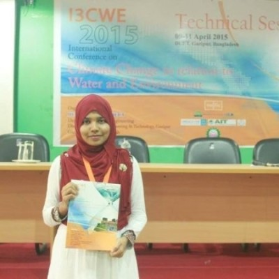

Rabeya Akter
MSc candidate,
Majoring in GIS
Geography Department, Ohio University
Contact:
1235 Wildwood Ave, Sunnyvale, CA 94089
ra036018@ohio.edu
Geography Department, Ohio University
Contact:
1235 Wildwood Ave, Sunnyvale, CA 94089
ra036018@ohio.edu
I am a graduate student in Geography
Department at Ohio University under the supervision of
Dr. Jana Houser.
My research area covers GIS based Geospatial Analysis, application of GIS and Remote Sensing and Natural Hazards.
Research Experience
Research Assistant
Institute of Water and Flood Management, Bangladesh University of Engineering and Technology
Dhaka, Bangladesh
June 2015 - July 2018
- Utilized salinity data, calibrated and validated numeric model, analyzed data and processed output applying ArcGIS, ArcPy, MATLAB and SQL
- Presented outputs in project meeting, workshops and prepared project reports
Research Assistant
Postgraduate programs on Disaster Management, BRAC University
Dhaka, Bangladesh
Jan 2015 - May 2015
- Coordinated postgraduate program and helped students in coursework
Work Experience
Graduate Teaching Assistant
Geography Department, Ohio University
Athens, OH
Aug 2018-Dec 2019
- Taught lab sections of Introduction to GIS and Mapping Sciences, and Principles of GIS
- Graded and evaluated submitted labs and provided assistance to students
Adjunct Faculty
Department of Civil Engineering, Presidency University
Dhaka, Bangladesh
May 2018-July 2018
- Delivered lectures on Introduction to GIS (6 credits) course
- Graded exam papers and evaluated student performance
Intern
Dhaka City Corporation
Dhaka, Bangladesh
Oct 2013 - Nov 2013
- Designed the layout plan and studied site for Redevelopment of Bahadur Shah Park project, funded by World Bank
Skills
Projects
GIS and Remote Sensing based hurricane damage assessment, US
- Analyzed Landsat satellite images utilizing ArcGIS Pro, model builder and python script to correlate different intensity hurricane effects
- Measured pre and post hurricane effects by masking clouds, mosaicking scenes, calculating remote sensing indices and buffering around hurricane tracks
- Applied spatial queries and spatial analysis to evaluate the result
- Classified images to prepare digital maps for visualizing hurricane damage recovery
Image processing to prepare land cover map of Columbus, Ohio
- Processed hyperspectral images through radiometric correction, dark subtraction, histogram analysis, image filtering, band ratioing, supervised classification, unsupervised classification, post processing and spectral library building to prepare land cover map utilizing ENVI
Development of analytical model for assessment of salinity hazard
- Improved an existing tidal prism model to quantify salinity residence time for an estuarine environment
- Calculated parameters of the model through Delft3D, and processed data using ArcGIS, Arcpy and MATLAB
- Developed a new indicator named Non-Dimensional Index for Salinity (NDIS) to assess salinity hazard based on non-dimensional analysis
- Generated salinity hazard map for present and future scenarios which had been considered for local level coastal planning in Bangladesh
Salinity and hydrologic modeling of GBM Delta
- Established 2D salinity model, calibrated, and validated model for Bangladesh coast using Delft3D
- Analyzed database using SQL, Excel, ArcGIS and formulated analytical representation through graphs, charts and tables
- Simulated scenarios such as sea level rise, superimposed cyclone, and flooding to examine salinity intrusion condition in Bangladesh coast and GBM Delta using Delft3D, ArcGIS and satellite imagery.
- Utilized GPS, GIS and programming scripts to analyze results and prepare maps
Coastal hazard vulnerability mapping
- Conducted ArcGIS based spatial analysis, queries, slope analysis, DEM analysis, projection transformation and mapping to identify hazard vulnerability in Bangladesh coast
Education
Masters of Science in Geography
Ohio University
Athens, OH
Dec 2020
3.81 out of 4.0
Masters of Science in Water Resource Development
Bangladesh University of Engineering and Technology
Dhaka, Bangladesh
May 2018
3.33 out of 4.0
Bachelor of Urban and Regional Planning
Bangladesh University of Engineering and Technology
Dhaka, Bangladesh
July 2014
3.62 out of 4.0
Certificates & Trainings
Certificates:
GIS Data Formats, Design and Quality, What is Data Science?Creating and Sharing GIS Content Using ArcGIS Online
Trainings:
- Provided Training on Delft3D Modeling Suite organized by Deltas, Vulnerability and Climate Change: Migration and Adaptation (DECCMA) project, Institute of Water and Flood Management, BUET, Dhaka, November 5-16, 2016
- Attended Training on Risk, Vulnerability and Migration Analysis organized by The University of Ghana, Accra, July 11-15, 2016
- Workshop on Earthquake Risk Reduction in Department of Urban and Regional Planning, BUET, Dhaka, March 8, 2014
- Training on Advanced Image Classificationorganized by Bangladesh Institute of Planners (BIP), Dhaka, September 13, 2014
- Training on Statistica (Statistical Analytical Software) course organized by The Department of Urban and Regional Planning, BUET, Dhaka, September 26-30, 2012
Publications
Journal Publications:
- Akter R., Asik, T. Z, Sakib M., Akter M., Sakib M. N., Al Azad, A.S.M., Maruf, M., Haque, A. and Rahman, M., (2019). The Dominant Climate Change Event for Salinity Intrusion in the GBM Delta. Climate , 7(5), 69.
- Uddin M. N., Islam AKM S., Bala S. K., Islam G. M. T., Adhikary S., Saha D., Haque S., Fahad G. R., Akter R., (2019). Mapping of Climate Vulnerability of the Coastal Regions of Bangladesh using Principal Component Analysis. Journal of Applied geography 102 (2019): 47-57.
- Huq F.F., Akter R., & Hafiz R., Mamun A. A., Rahman M., (2017). Conservation Planning of Built Heritages of Old Dhaka, Bangladesh. Journal of Cultural Heritage Management and Sustainable Development, Volume 7, Issue 3 pp. 244-271, ISSN: 2044-1266
- Barua U., Akter R., & Jahan S., (2015). Rural-Urban Linkage through Growth Centers in Bangladesh. Bangladesh Research Publications Journal, 10(4): 314-320, BRP.
Conference Proceedings:
- Asik, T. Z., Al Azad, A. A., Akter, R., Sakib, M., Haque, A., & Rahman, M. M. (2018). Generating a Plausible Future of Salinity Intrusion due to Mora-like Cyclone Along the Coast of Bangladesh. Proceedings of the 21 st IAHR-APD Congress, Yogyakarta 2-5 September 2018, Indonesia.
- Akter R., Sakib M., Sakib M. N., Zaman S., Haque A., Rahman M., and Hossain D., (2017). Assessment of Salinity Hazard Based on Residence Time of Salinity in Bangladesh Coast. Proceedings of the 6 th International Conference on Water and Flood Management (ICWFM), pp 125-130, 4-6 March, 2017, Dhaka, Bangladesh.
- Sakib M., Nihal F., Akter R., Maruf M., Akter M., Noor S., Rimi R. A., Haque A., and Rahman M. (2016). Afforestation as a Buffer against Storm Surge Flooding along the Bangladesh Coast. Proceedings of the 12 th International Conference on Hydro-Science & Engineering for Environmental Resilience (ICHE), November 6-10, 2016, Tainan, Taiwan.
- Akter R., Sumaiya S., Rahman M., Ahmed T., Sakib M., Haque A., Rahman M. M., (2016). Prediction of Salinity Intrusion due to Sea Level Rise and Reduced Upstream Flow in the GBM Delta. Proceedings of the 20th Congress of the Asia Pacific Division of the International Association for Hydro Environment Engineering & Research (IAHR), August - 28, 29, 30, 31, Colombo, Sri Lanka.
- Akter R., Sakib M., Rahman M., Sumaiya, Haque A., Rahman M. M., and Islam M. R., (2016). Climatic and Cyclone Induced Storm Surge Impact on Salinity Intrusion along the Bangladesh Coast. Proceedings of the 6th International Conference on the Application of Physical Modeling in Coastal and Port Engineering and Science (Coastlab16), IAHR, 11-13 May, Ottawa, Canada.
- Rahman M., Sumaiya, Akter R., Haque A., Rahman M. M., (2015). Isohalines to Demonstrate Predicted Salinity Intrusion in Coastal Region of Bangladesh. Proceedings of the International Conference on Climate Change & Water Security, MIST, Dhaka, Bangladesh, December.
- Sakib M., Nihal F., Haque A., Rahman M. M., Jisan M. A., Noor S., Akter R., Rahman M., Rimi R. A., and Omar M. A. T., (2016). Storm Surge Flooding due to SIDR-AILA and SIDR-AILA-LIKE Cyclones along the Bangladesh Coast. Proceedings of the International conference on Sustainable Development, ULAB, Dhaka, Feb 4-5, 2016
- Akter R., Zakir H., Noor S., Khan M. S. A., and Salehin M., (2015). Urban Flooding Risk Mitigation through Detention Based Storm Water Management: A Case Study of Hatirjheel. Proceedings of the International Conference on Recent Innovation in Civil Engineering for Sustainable Development(IICSD-2015), Department of Civil Engineering, DUET, Gazipur, Bangladesh, held during 11-13 December, 2015, Dhaka, pp. 1039-1044.
- Huq F.F., & Akter R., (2015). Climate Change Induced Vulnerability and Community Based Disaster Management Program in Dhaka City. Proceedings of the International conference on Climate Change in relation to Water and Environment, Organized by DUET NICHE Project, 09-11 April, 2015, Dhaka, pp. 575- 582.
Forum Presentation:
- Akter R., Tehsin S., & Zakir H., (2015). Adaptation to climate change for the vulnerable people of urban city: A study to reduce climate change induced vulnerability of slum dwellers of Dhaka city. The Regional Forum on Climate Change (RFCC) - Low Carbon and Climate Resilient, 1-3 July, 2015, Asian Institute of Technology (AIT), Thailand.
Poster Presentation:
- Akter R., Nihal F., Sakib M. N., Omar T., Hossain D., and Karim D. S., (2016). Residence Time of Salinity in Bangladesh Coast. DECCMA 5 th Consortium Workshop, Jadavpur University, India, 30 Aug - 2 Sept, 2016.
- Akter R., Nihal F., Rahman M., Ahmed T., and Sumaiya, (2016). Salinity in Coastal Bangladesh: Present-Day-Condition & Future-Scenario. DECCMA 4 th Consortium Workshop, University of Southampton, UK, 12-15 Jan, 2016.